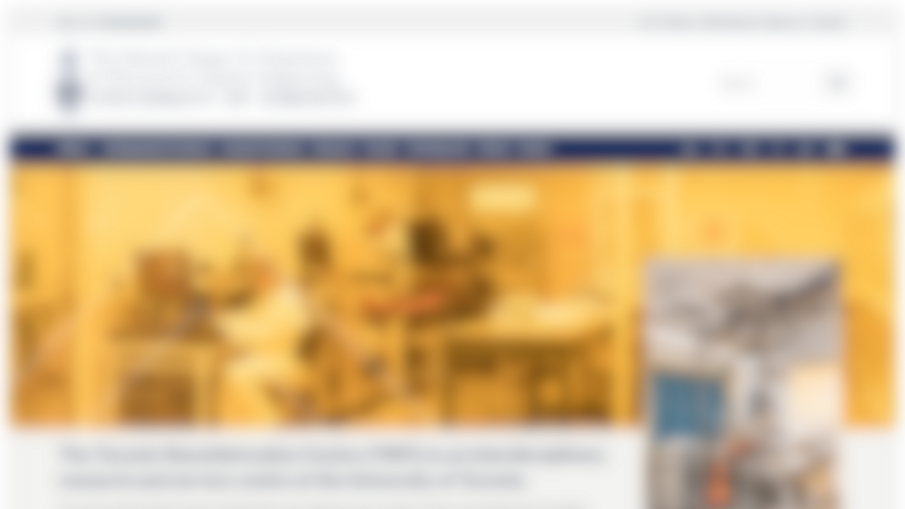
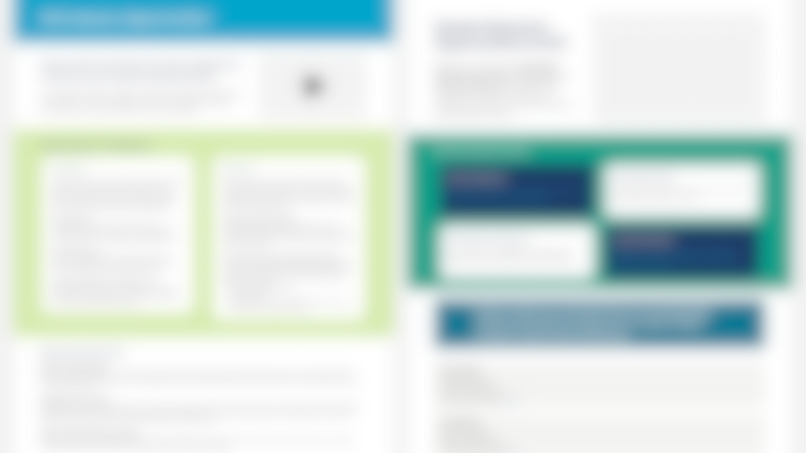
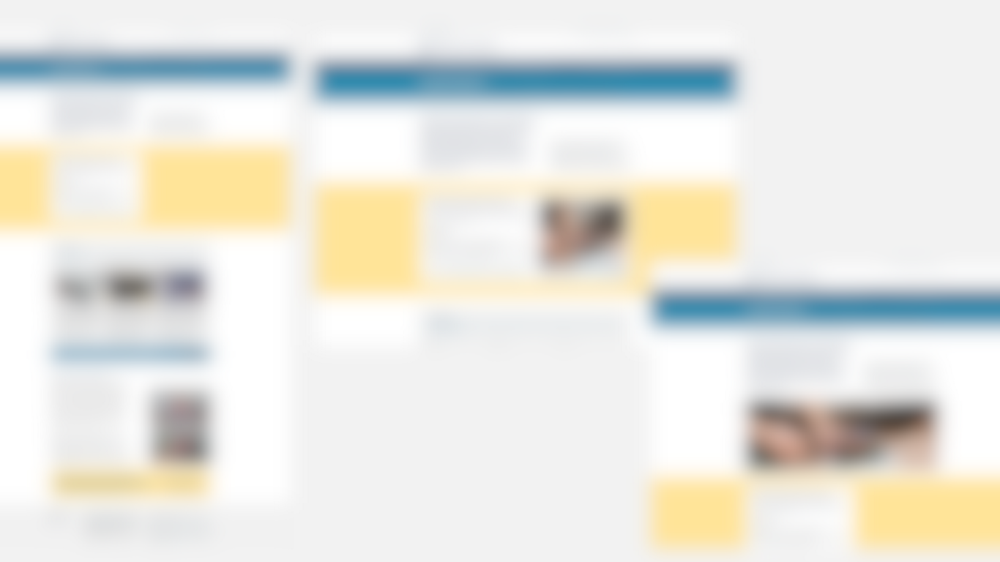
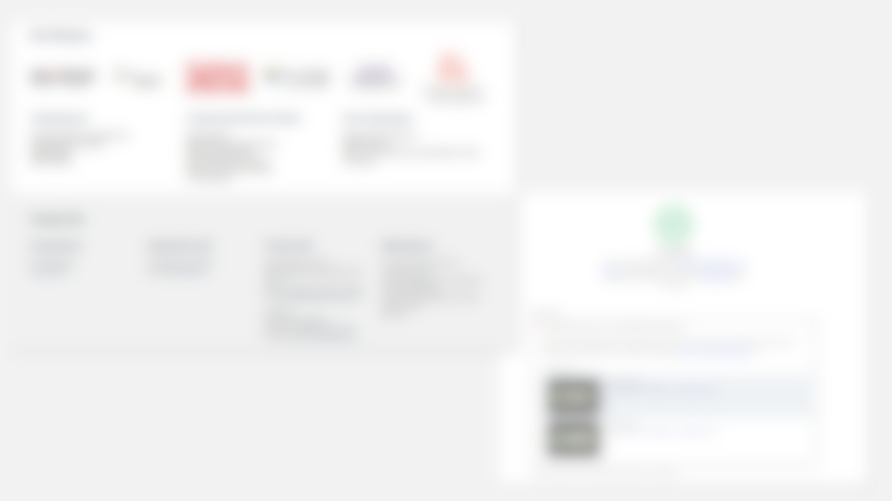

ECE Events Page ↗
Original Page | Shipped | March 2025
Contextualized the static events widget into an informative page, improving visitor awareness.

UI/UX
PRODUCTION DESIGN
FIGMA
WORDPRESS
EDUCATION
Summary: I led end-to-end production design and WordPress implementation for the U of T ECE website and the Intranet portal, improving usability, standardizing components, and ensuring accessibility compliance to meet key business goals.
I worked at the University of Toronto’s Electrical and Computer Engineering (ECE) Department, redesigning and managing both their public-facing website and a restricted intranet. My role was end-to-end, spanning site audits, low-fidelity and high-fidelity wireframe design in Figma, stakeholder presentations and coordination, and WordPress implementation
Overall, my core responsibilities were to:
While I was not the first (or the current one) to handle web production, my work coincided with a strategic shift by the department. The redesigns aligned with departmental communication goals and focused on making ECE’s work easier to understand. Research and academic activity were presented more clearly, with separate emphasis on events and learning opportunities. The public site was designed primarily for recruitment and image-building. The intranet was as a restricted-access portal maintained for faculty and staff usage. Managing these two WordPress environments allowed us to respond to short-term departmental updates while maintaining long-term usability and consistency.
Disclaimer: As this public website continues to evolve, some pages linked here may differ from the images shown. I have since left the organization, and any updates made thereafter are at their discretion.
My methodology focused on ensuring all production work was grounded in user needs and departmental strategy.
Studied the website through UX research and stakeholder workshops to understand how students, faculty, and visitors navigate and make decisions online. I simplified information paths so users could locate what they need faster and feel less overwhelmed.
Audited the content and layouts to see how design patterns influenced engagement and comprehension. I made sure items were identifiable visually to reduce cognitive friction, leading to data-driven exploration for solutions.
Designed and refined mockups based on feedback, focusing on how users interacted. These were my focuses particularly during and post-implementation.
I frequently created annotated mockups in Figma to visualize and refine design changes before implementing them in WordPress. These ranged from full-page redesigns to incremental updates where I adjusted layouts, components, or added new content blocks to existing pages, ensuring a consistent user experience.
I focused on standardizing core UI components in Figma and the CMS. This effort led to a significant reduction in design-to-development discrepancies and accelerated our overall timeline.
I managed the operational workflow for weekly website content updates via Asana forms, enabling prioritization and implementation of staff and faculty requests.


This process allowed stakeholders to preview changes early and provide feedback before any development work was done. By iterating through mockups first, I helped the department save time on revisions and ship pages that were both user-friendly and visually consistent with U of T's branding guidelines (available publicly here).
The Events Page is the best example of this production shift. Previously, the page was simply the default output of a WordPress calendar widget: functional, but poor "sensemaking." My build resulted in turning this simple content area into a page that contextualized information.
In my Figma mockup, I use a highly customized interface, requiring a a custom widget built from scratch. However, during the stakeholder presentations, I chose to use the existing widget with minor visual modifications instead. This decision saved significant development time while making it easier for student visitors to find upcoming opportunities, without over-engineering for purely aesthetic gains.

Driven by a commitment to inclusive design, I conducted accessibility reviews for various departmental web pages, ensuring compliance with WCAG standards and usability best practices. Using tools such as Google Lighthouse, I consistently achieved high accessibility scores. This was achieved by manually auditing to ensure the CMS reflected the clean hierarchy designed in Figma. For example, the Events Page scored 95/100, and the Toronto Nanofabrication Centre (TNFC) site scored 99/100, reinforcing the department's commitment to web standards.


Original Page | Shipped | March 2025
Contextualized the static events widget into an informative page, improving visitor awareness.
Original Page | Shipped | March 2025
Migrated independent TNFC lab website into the main ECE site, unifying digital presence.
Redesign | Shipped | January 2025
Led homepage redesign to simplify ECE exploration for prospective students.
Original Page | Shipped | December 2024
Created a new page for Marketing to showcase partnership opportunities and secure sponsorships.
Original Page | Shipped | December 2024
Developed a new research sub page to showcase student work and drive engagement.
Original Page (Implementation Only) | Shipped | December 2024
Created a new page to showcase news and blog posts on the website.
Shipped Jan 2025
Business Impact: Increased user access to key institutional pages
User Impact: Increased informational value gained from site sessions